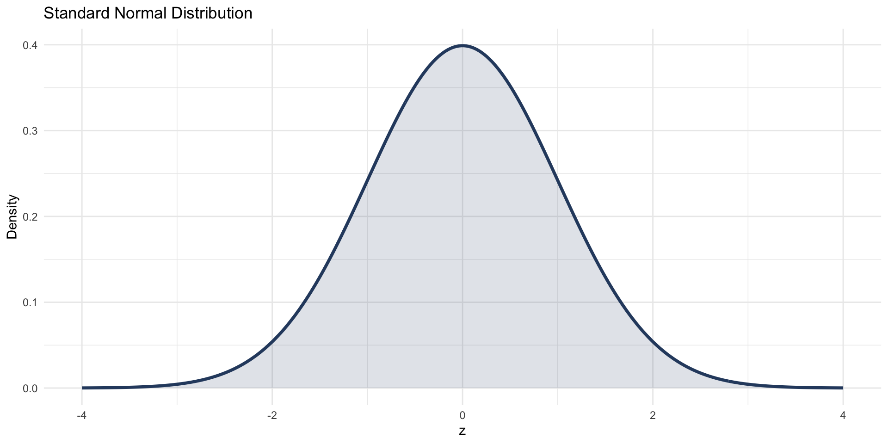
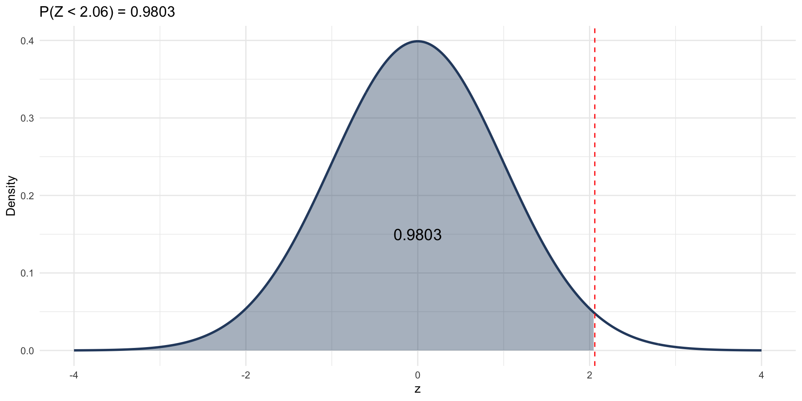
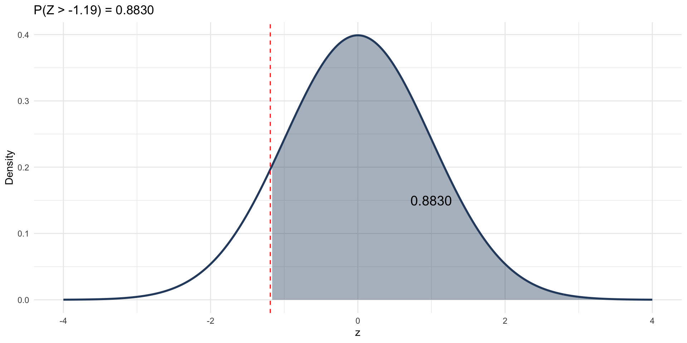
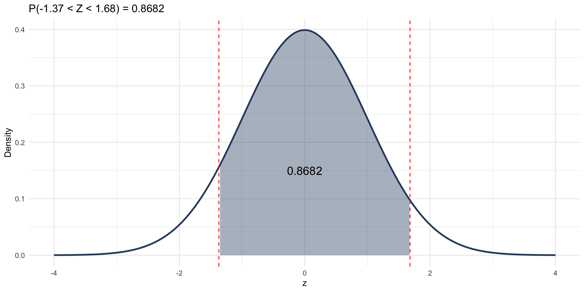
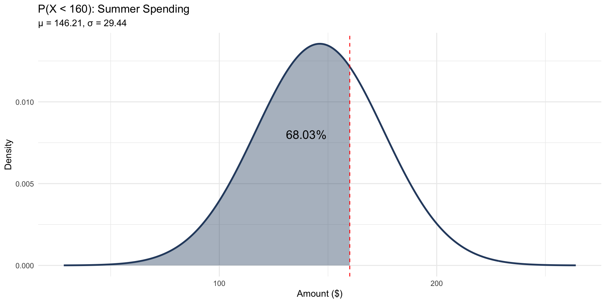
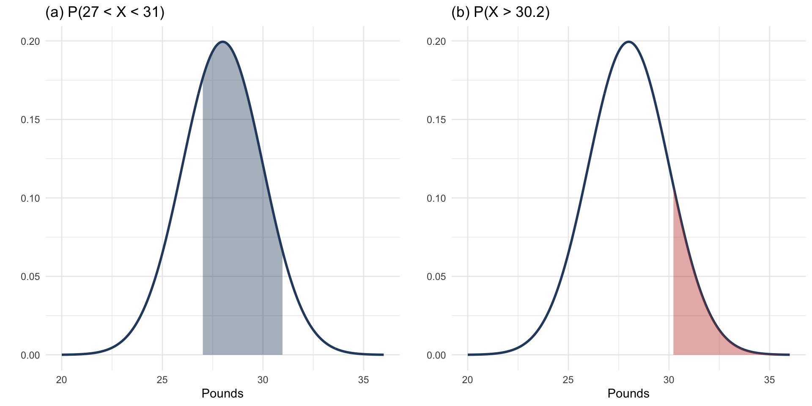
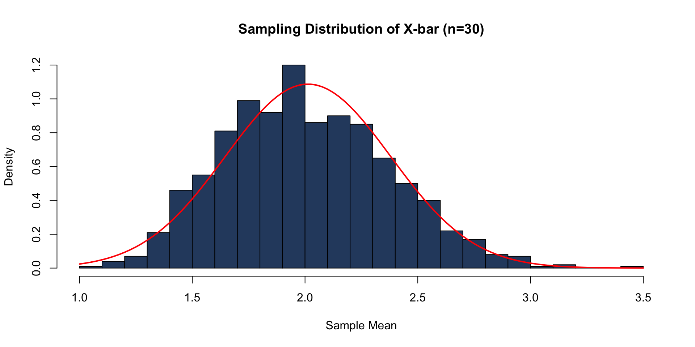

Statistics
Chapter 6: The Normal Distribution
Shih Chien University
2026-07-20
Overview
Sections covered:
- 6-1 Normal Distributions
- 6-2 Applications of the Normal Distribution
- 6-3 The Central Limit Theorem
- 6-4 The Normal Approximation to the Binomial Distribution
The normal distribution is the most important and widely used continuous probability distribution in statistics. Its familiar bell-shaped curve appears throughout natural phenomena, measurement errors, and statistical inference.
Section 6-1: Normal Distributions
Properties of the Normal Distribution
Definition
A normal distribution is a continuous, symmetric, bell-shaped distribution of a variable. The curve is determined entirely by the mean μ and standard deviation σ.
Key properties:
- The distribution is bell-shaped and symmetric about the mean
- The mean, median, and mode are all equal
- The curve is continuous — it never touches the x-axis
- The total area under the curve equals 1
- Approximately 68% of values lie within 1σ of μ; 95% within 2σ; 99.7% within 3σ

The Standard Normal Distribution
Definition
The standard normal distribution is a normal distribution with mean μ = 0 and standard deviation σ = 1. Values on this distribution are called z values or z scores.
The z score converts any normal variable X to the standard normal:
z = \frac{X - \mu}{\sigma}
- The z score represents the number of standard deviations X is from the mean
- Area under the curve = probability
Finding Areas Under the Standard Normal Curve
Areas are found using:
- Table E (standard normal table) in textbook appendix
- R:
pnorm(z)gives P(Z < z)
Key R Functions
pnorm(z)— area to the left of z1 - pnorm(z)— area to the right of zpnorm(z2) - pnorm(z1)— area between z1 and z2qnorm(p)— find z given left-tail area p
Example 6-1
Area to the Left of z
Find the area to the left of z = 2.06.
Example 6-1
x <- seq(-4, 4, length.out = 300)
df <- data.frame(x = x, y = dnorm(x))
ggplot(df, aes(x, y)) +
geom_line(color = "#2c4a6e", linewidth = 1) +
geom_area(data = filter(df, x <= 2.06),
aes(x, y), fill = "#2c4a6e", alpha = 0.4) +
annotate("text", x = 0, y = 0.15, label = "0.9803", size = 5) +
geom_vline(xintercept = 2.06, linetype = "dashed", color = "red") +
labs(title = "P(Z < 2.06) = 0.9803", x = "z", y = "Density") +
theme_minimal()
Example 6-2
Area to the Right of z
Find the area to the right of z = −1.19.
Example 6-2
x <- seq(-4, 4, length.out = 300)
df <- data.frame(x = x, y = dnorm(x))
ggplot(df, aes(x, y)) +
geom_line(color = "#2c4a6e", linewidth = 1) +
geom_area(data = filter(df, x >= -1.19),
aes(x, y), fill = "#2c4a6e", alpha = 0.4) +
annotate("text", x = 1, y = 0.15, label = "0.8830", size = 5) +
geom_vline(xintercept = -1.19, linetype = "dashed", color = "red") +
labs(title = "P(Z > -1.19) = 0.8830", x = "z", y = "Density") +
theme_minimal()
Example 6-3
Area Between Two z Values
Find the area between z = −1.37 and z = +1.68.
Example 6-3
x <- seq(-4, 4, length.out = 300)
df <- data.frame(x = x, y = dnorm(x))
ggplot(df, aes(x, y)) +
geom_line(color = "#2c4a6e", linewidth = 1) +
geom_area(data = filter(df, x >= -1.37 & x <= 1.68),
aes(x, y), fill = "#2c4a6e", alpha = 0.4) +
annotate("text", x = 0, y = 0.15, label = "0.8682", size = 5) +
geom_vline(xintercept = c(-1.37, 1.68), linetype = "dashed", color = "red") +
labs(title = "P(-1.37 < Z < 1.68) = 0.8682", x = "z", y = "Density") +
theme_minimal()
Example 6-4
Multiple Probability Calculations
Find the following probabilities for the standard normal distribution:
(a) P(0 < Z < 2.32) (b) P(Z < 1.65) (c) P(Z > 1.91)
Example 6-4
Solution
Solve
Find the z value such that the area to the left is 0.7123.
Solution (Mathematical):
- Search Table E for the area closest to 0.7123
- The corresponding z value is z = 0.56
Key Rule
qnorm(p) is the inverse of pnorm(z). Use it whenever you need the z value for a given probability.
Section 6-2: Applications of the Normal Distribution
Applying the Normal Distribution
To find probabilities for a non-standard normal variable X (with mean μ and standard deviation σ):
Formula
z = \frac{X - \mu}{\sigma}
Convert X to a z score, then find the area using the standard normal.
In R, use pnorm(x, mean = μ, sd = σ) directly — no conversion needed.
Key Steps
- Identify μ and σ
- Draw a diagram and shade the desired region
- Convert X to z (or use R directly)
- Find the probability
Example 6-6
Warning
The average amount of money that Americans spend on summer travel is normally distributed with μ = $146.21 and σ = $29.44. Find the probability that a randomly selected American spends less than $160 on summer travel.
Solution:
z = \frac{160 - 146.21}{29.44} = \frac{13.79}{29.44} \approx 0.47
Area to the left of z = 0.47 → 0.6808 (68.08%)
x <- seq(mu - 4*sigma, mu + 4*sigma, length.out = 300)
df <- data.frame(x = x, y = dnorm(x, mu, sigma))
ggplot(df, aes(x, y)) +
geom_line(color = "#2c4a6e", linewidth = 1) +
geom_area(data = filter(df, x <= 160), aes(x, y),
fill = "#2c4a6e", alpha = 0.4) +
geom_vline(xintercept = 160, linetype = "dashed", color = "red") +
annotate("text", x = 140, y = 0.008, label = "68.08%", size = 5) +
labs(title = "P(X < 160): Summer Spending",
subtitle = paste0("μ = ", mu, ", σ = ", sigma),
x = "Amount ($)", y = "Density") +
theme_minimal()
Example 6-7
Newspaper Recycling
Each month, an American household generates an average of 28 pounds of newspaper for recycling, with σ = 2 pounds. Assume a normal distribution.
(a) P(27 < X < 31) (b) P(X > 30.2)
Example 6-7
x <- seq(mu - 4*sigma, mu + 4*sigma, length.out = 300)
df <- data.frame(x = x, y = dnorm(x, mu, sigma))
p1 <- ggplot(df, aes(x, y)) +
geom_line(color = "#2c4a6e", linewidth = 1) +
geom_area(data = filter(df, x >= 27 & x <= 31),
aes(x, y), fill = "#2c4a6e", alpha = 0.4) +
labs(title = "(a) P(27 < X < 31)", x = "Pounds", y = "") +
theme_minimal()
p2 <- ggplot(df, aes(x, y)) +
geom_line(color = "#2c4a6e", linewidth = 1) +
geom_area(data = filter(df, x >= 30.2),
aes(x, y), fill = "#c0392b", alpha = 0.4) +
labs(title = "(b) P(X > 30.2)", x = "Pounds", y = "") +
theme_minimal()
gridExtra::grid.arrange(p1, p2, ncol = 2)
Example 6-8
Coffee Consumption
The per-capita consumption of coffee is normally distributed with μ = 1.64 gallons per year and σ = 0.24 gallons. In a sample of 500 people, how many consume less than 1 gallon per year?
Example 6-8
Solution
Solve
To qualify for a police academy, applicants are tested on their physical fitness. The scores are normally distributed with μ = 200 and σ = 20. The top 10% of applicants will be accepted. Find the minimum score needed.
Solution (Mathematical):
- Need the 90th percentile → find z such that P(Z < z) = 0.90
- z \approx 1.28
- X = μ + z·σ = 200 + 1.28(20) = 225.6 \approx 226
[1] 225.631Answer: An applicant needs a score of at least 226 to be in the top 10%.
Example 6-10
Warning
For a certain group, systolic blood pressure is normally distributed with μ = 120 and σ = 8. Find the range of pressures that includes the middle 60% of readings.
Solution:
- Middle 60% → 20% in each tail → find z for P(Z < z) = 0.20 and P(Z < z) = 0.80
- z_1 \approx -0.84, z_2 \approx 0.84
- X₁ = 120 + (−0.84)(8) = 113.28
- X₂ = 120 + (0.84)(8) = 126.72
[1] 113.267[1] 126.733Answer: The middle 60% of readings fall between 113.28 and 126.72 mmHg.
Example 6-11
Warning
A researcher claims that the distribution of technology inventories at warehouses is approximately normal with μ = 110,000 and σ = 15,000 units. A warehouse is selected at random. Find the probability that it has more than 132,500 units.
[1] 0.0668072[1] 1.5[1] 0.0668072Answer: z = 1.50, P(X > 132,500) \approx 0.0668 (about 6.68%).
Example 6-12
Warning
The distribution of the duration of professional baseball games is negatively skewed with μ = 166 minutes and σ = 26 minutes. If a game is selected at random, find the probability that it lasts less than 145 minutes.
Caution
This distribution is not normal — it is negatively skewed. Applying normal distribution methods is only appropriate when the distribution is approximately normal. Here the answer is an approximation.
[1] -0.8076923[1] 0.2096339Note: z \approx -0.81; P(X < 145) \approx 0.2090 (approximately 20.9%). Since the data is skewed, this is only a rough estimate.
Section 6-3: The Central Limit Theorem
The Central Limit Theorem
The Central Limit Theorem (CLT)
As sample size n increases, the sampling distribution of the sample mean \bar{X} approaches a normal distribution, regardless of the shape of the population distribution, provided n is sufficiently large (typically n \geq 30).
\mu_{\bar{X}} = \mu \qquad \sigma_{\bar{X}} = \frac{\sigma}{\sqrt{n}}
The standard error \sigma_{\bar{X}} = \sigma/\sqrt{n} measures how much sample means vary from sample to sample.
Applying the CLT
z Score for Sample Means
z = \frac{\bar{X} - \mu}{\sigma/\sqrt{n}}
In R: Use pnorm(xbar, mean = μ, sd = σ/sqrt(n))
The CLT explains why the normal distribution is so central to statistics:
- Survey results, poll averages, sample statistics all tend toward normality
- Enables inference even when the population shape is unknown
# CLT demonstration: sampling from a skewed distribution
set.seed(42)
pop <- rexp(10000, rate = 0.5) # skewed population
sample_means <- replicate(1000, mean(sample(pop, 30)))
hist(sample_means, breaks = 30, col = "#2c4a6e",
main = "Sampling Distribution of X-bar (n=30)",
xlab = "Sample Mean", freq = FALSE)
curve(dnorm(x, mean(pop), sd(pop)/sqrt(30)), add = TRUE,
col = "red", lwd = 2)
Example 6-13
Children’s TV Viewing
Children in the United States watch an average of μ = 25 hours of TV per week, with σ = 3 hours. A random sample of n = 20 children is selected. Find the probability that the sample mean exceeds 26.3 hours.
Example 6-13
Solution
Solve
The average age of vehicles registered in the United States is μ = 96 months, with σ = 16 months. Assume the distribution is approximately normal. A random sample of n = 36 vehicles is taken. Find P(90 < \bar{X} < 100).
[1] 2.666667[1] 0.9209683Answer: P(90 < \bar{X} < 100) \approx 0.9211 (92.11%)
The sample mean is very likely to fall in this range because the standard error is only 2.67 months.
Example 6-15
Warning
The average annual meat consumption per person is μ = 218.4 pounds, σ = 25 pounds.
(a) Find P(X < 224) for a single individual. (b) Find P(\bar{X} < 224) for a sample of n = 40 individuals.
[1] 0.5886213[1] 0.9217147Answers: (a) \approx 58.71%; (b) \approx 92.22%
Key Insight
The probability is much higher for the sample mean because the standard error (σ/√n) is smaller than σ — sample means are less variable than individual values.
Section 6-4: The Normal Approximation to the Binomial Distribution
Why Use the Normal Approximation?
The binomial distribution is exact but computationally intensive for large n. The normal distribution provides a convenient approximation.
When to Use the Normal Approximation
Use the normal approximation to the binomial when: np \geq 5 \quad \text{and} \quad nq \geq 5 where q = 1 − p.
The approximating normal distribution has: \mu = np \qquad \sigma = \sqrt{npq}
Correction for Continuity
Correction for Continuity
Since we are approximating a discrete distribution with a continuous one, add or subtract 0.5 from X:
| Binomial Expression | Normal Approximation |
|---|---|
| P(X = a) | P(a − 0.5 < X < a + 0.5) |
| P(X \geq a) | P(X > a − 0.5) |
| P(X > a) | P(X > a + 0.5) |
| P(X \leq a) | P(X < a + 0.5) |
| P(X < a) | P(X < a − 0.5) |
Example 6-16
Warning
A survey found that 6% of American drivers read while driving. If 300 drivers are selected at random, find the approximate probability that exactly 25 read while driving.
Check: n = 300, p = 0.06, q = 0.94
np = 300(0.06) = 18 \geq 5 ✓
nq = 300(0.94) = 282 \geq 5 ✓
Parameters: μ = np = 18, σ = \sqrt{npq} = \sqrt{300 \times 0.06 \times 0.94}
mu = 18 sigma = 4.1134 [1] 0.02290202[1] 0.02263092Answer (normal approx.): \approx 0.0227 (2.27%); Exact binomial: \approx 0.0220.
Example 6-17
Widowed Bowlers
Researchers found that 10% of people who bowl are widowed. If 200 bowlers are selected, find the probability that 10 or more are widowed.
Example 6-17
Solution
Solve
In baseball, a .320 batting average means a player gets a hit 32% of the time. In 100 at-bats, find the probability of getting 26 or fewer hits.
Check: np = 32 \geq 5, nq = 68 \geq 5 ✓
Parameters: μ = 32, σ = \sqrt{100 \times 0.32 \times 0.68}
mu = 32 sigma = 4.6648 [1] 0.1191886[1] 0.1180158Answer (normal approx.): \approx 0.119 (11.9%); Exact: \approx 0.116.
Example 6-19
Warning
A coin is flipped 10 times. Find the probability of getting exactly 6 heads using:
(a) The binomial distribution
(b) The normal approximation
Caution
Here np = 5, nq = 5 — these are exactly at the minimum threshold. The normal approximation may be less accurate for small n.
mu = 5 sigma = 1.581139 [1] 0.2050781[1] 0.204524Comparison: Exact = 0.2051; Normal approx. = 0.2034
The approximation is quite close even for this borderline case.
Chapter 6 Summary
| Topic | Formula | R Function |
|---|---|---|
| Standard normal area (left) | P(Z < z) | pnorm(z) |
| Standard normal area (right) | 1 − P(Z < z) | pnorm(z, lower.tail=FALSE) |
| Find z from area | — | qnorm(p) |
| Non-standard normal | z = (X − μ)/σ | pnorm(x, mean, sd) |
| Sample mean probability | z = (X̄ − μ)/(σ/√n) | pnorm(xbar, mean, sd/sqrt(n)) |
| Normal approx. to binomial | μ=np, σ=\sqrt{npq} | ±0.5 correction |
Key Takeaways
- The normal distribution is fully described by μ and σ
- Convert to z scores to use the standard normal table
- The CLT guarantees that sample means are approximately normal for n \geq 30
- Use normal approximation to binomial when np \geq 5 and nq \geq 5
- Always apply the correction for continuity in the normal approximation
Acknowledgement
Copyright notice. These teaching materials have been adapted from Bluman, A. G. (2011). Elementary statistics: A step by step approach (8th ed.). McGraw-Hill. All rights are reserved by the original authors and publishers.
Non-commercial use only. These materials are strictly intended for educational purposes and must not be used for commercial gain or profit.
Proper attribution. Any reproduction, distribution, or use of these materials must provide proper attribution to the original source.

Elementary Statistics: A Step by Step Approach